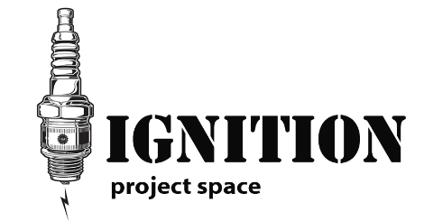

Charlotte Briskin: Spontaneous Symmetry
Spontaneous Symmetry connects the synchronicities of life, from microscopic structures to planetary phenomena, through the material exploration of textiles and handmade paper. This body of work imitates patterns and processes found in nature, such as spider webs, bronchial branches, mycelium, weather formations, beehives, neural passageways, and river formations.
Inspired by the generous symbiotic relationships at every level of life, from multicellular communities in our organs to mycelial networks across the globe, Spontaneous Symmetry reveals the similarities between the human body and the natural world.
Charlotte Briskin is a paper maker and textile artist from Eastern Pennsylvania living and working in Chicago, Illinois. She graduated from Columbia College Chicago in 2023 with a BFA in Fine Arts, focusing on Fibers and Paper Making. She uses a variety of interactive sculptural materials such as handmade paper, fabric, stuffing, metal, and found objects. Briskin’s work centers on inviting interactivity, play, and community engagement through art and nature.